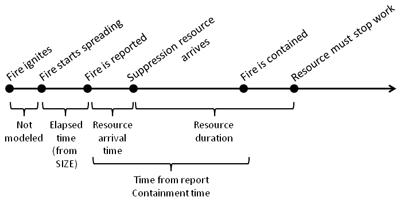
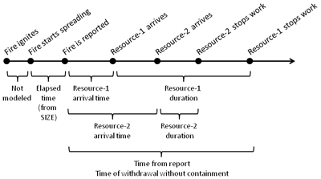

|
|
Resource Arrival Time |
The resource arrival time is the elapsed time from the time the fire was reported until the containment resource arrives at the fire and begins line construction. All firefighting activities that occur before line construction begins should be accounted in the resource arrival time (for example, travel time to fire, scouting and size up, safety zone construction, etc.).
If Suppression input entered for multiple resources is selected as an input option, there must be exactly one resource arrival time entry in the worksheet for every resource name entry. Each resource will be dispatched to the fire according to its resource arrival time.
|
I/O |
Module |
If |
Notes |
|
Input |
CONTAIN |
|
|
|
Output |
None |
|
|
The following timelines illustrate the relationship of resource duration to time
of report and other resource variables.
Following is a timeline example for a single resource and successful containment.
|  |
Following is a timeline example for multiple resources (two in this case) and unsuccessful containment because resource need exceeded specified resource duration.
|  |